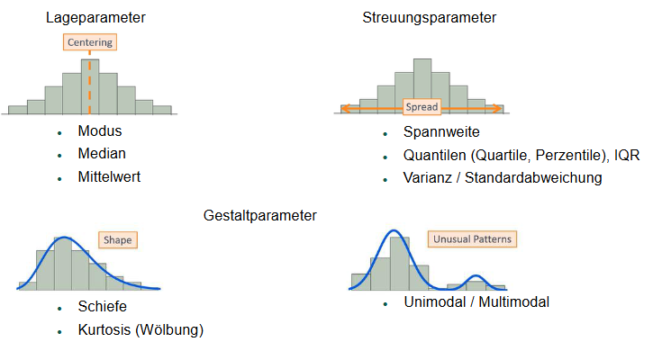
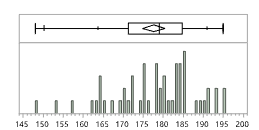
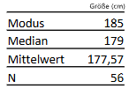
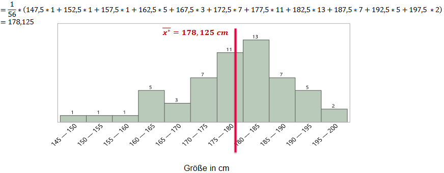
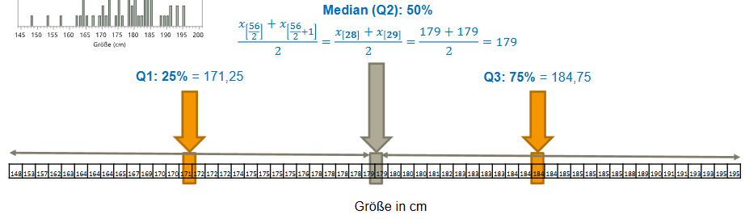
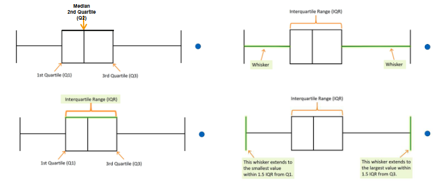
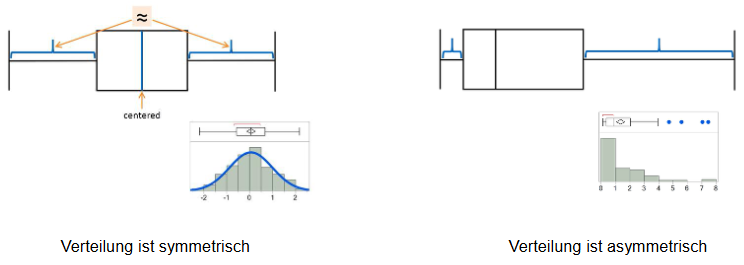
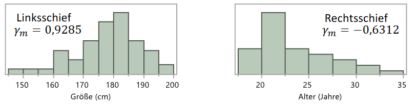
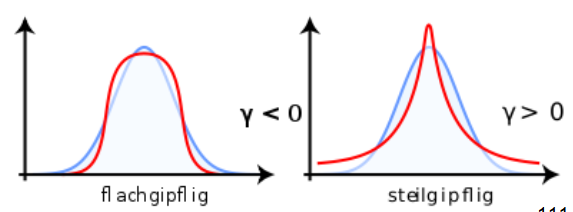

Kennzahlen (Parameter)

1 Lageparameter
Beschreibung zentraler Tendenz (Zentrum) einer (Häufigkeits-)Verteilung
-> “Wo befindet sich ein Großteil der Merkmalswerte einer Verteilung?”


1.1 Modus, Modalwert x_{\text{Mod}}
Häufigster Wert
Anwendung auch bei nominal skalierten Daten x_j
x_{\text{Mod}} =\max(h(x_i))
1.2 Median x_{\text{Med}}
“mittlerer” Wert: Gleichviele Werte ober- und unterhalb
Median = 50%-Quatile (Q2)
Urliste aufsteigend sortiert (nach Rang geordnet)
Mindestens ordinal skaliert
x_{\text{Med}} = \left\{ \begin{array}{cl} x_{\frac{n+1}{2}} & , \text{wenn }n\text{ ungerade} \\ \frac{x_{\frac{n}{2}} + x_{\frac{n}{2}+1}}{2} & , \text{wenn }n\text{ gerade} \end{array} \right.
1.2.1 Quantile
Quantile unterteilen sortierte Datenreihe in gleich große Teile.
Allgemeine Formel für dem Quantil p:
x_p = \left\{ \begin{array}{cl} \frac{x_{n\cdot p}+x_{n\cdot p + 1}}{2} & , \text{wenn } n\cdot p\text{ ganzzahlig} \\ x_{\left\lfloor n\cdot p +1 \right\rfloor} & , \text{wenn } n\cdot p\text{ nicht ganzzahlig} \end{array} \right.
1.3 Arithmetischer Mittelwert
Sinnvoll nur bei kardinalskalierten Werten
Meist nur sinnvoll bei symmetrischer Verteilung (Schiefe \approx 0)
Nicht robust gegen Außreiser
\bar{x} = \frac{1}{n} \sum_{i=1}^{n}{x_i}
1.3.1 Berechnung bei klassierten Daten
\overline{x}^* = \frac{1}{n} \sum_{j=1}^{n}{(x_j\cdot h(x_j))}
Mit x_j und h(x_j) als:
x_j := \text{Klassenmitte} \\ h(x_j) := \text{Klassenhäufigkeit}

2 Streuungsparameter
Beschreiben Streubreite einer (Häufigkeits-)Verteilung um Lageparameter
Voraussetzung: Kardinalskalierte Daten
2.1 Grundlegende Parameter
2.1.1 Spannweite SP
Eng.: range
SP = \max(x_i) - \min(x_i)
-> Nicht robust gegen Ausreißer
2.1.2 Mittlere absolute Abweichung MAD
Eng.: (mean absolute deviation)
MAD = \sum_{i=1}^{n}{|x_i-\bar{x}|}
2.1.3 Summe der Abweichungsquadrate SQ_x
Eng.: sum of squared differences
SQ_x = \sum_{i=1}^{n} (x_i - \bar{x})^2
2.1.4 Empirische Varianz \tilde{s}_x^2
Eng.: variance
\tilde{s}_x^2 = \frac{1}{n} SQ_x = \frac{1}{n} \sum_{i=1}^{n} (x_i - \bar{x})^2
2.1.5 Empirische Standartabweichung \tilde{s}
Eng.: standard deviation
\tilde{s} = \sqrt{\tilde{s}_x^2} = \sqrt{\frac{1}{n} \sum_{i=1}^{n} (x_i - \bar{x})^2}
2.1.6 Empirischer Variationskoeffizient v
Eng.: coefficient of variation
v = \frac{\tilde{s}}{\bar{x}}
2.2 Streuungsparameter um Median

Bei den Median handelt es sich um die 50%-Quantile bzw. auch Q2 oder Q_{0.5}
Darüberhinaus gibt es auch noch weitere Quantilen:
Q1 / Q_{0.25} / 25%-Quantile
-> 25% viele Werte unterhalb und 75% oberhalbQ3 / Q_{0.75} / 75%-Quantile
-> 75% viele Werte unterhalb und 25% oberhalb
2.2.1 Interquartilsabstand
Sagt aus, wie breit die “mittleren 50%” der Daten streuen.
- wenn p=0.25 -> Unteres Quantil
- wenn p=0.75 -> Oberes Quantil
Aus unterem und oberend Quantil lässt sich schließlich der Interquartilsabstand (Eng.: interquartile range) berechnen:
IQR=Q_{0.75} - Q_{0.25}
2.2.2 Mittlere absolute Abweichung vom Median
Eng.: mean absolute deviation from the median
MD = \frac{1}{n}\sum_{i=1}^{n}{|x_i-x_{\text{Med}}|}
2.2.3 Graphische Darstellung von Quantilen

Symmetrisch vs. Asymmetrisch

2.3 Stichproben
Bei Stichproben wird nicht durch die Anzahl n sondern durch die Anzahl der Freiheitsgrade n-1 geteilt.
2.3.1 Anzahl der Freiheitsgrade
Es gilt die Summe aller Abweichungen vom Mittelwert (Also Wert x_i minus Mittelwert \bar{x}) ist immer Null.
\begin{align*} \sum_{i=1}^{n} \left( x_i - \frac{1}{n} \sum_{j=1}^{n} x_j \right) &= \underbrace{\left( x_1 - \frac{1}{n} \sum_{j=1}^{n} x_j \right) + \ldots + \left( x_n - \frac{1}{n} \sum_{j=1}^{n} x_j \right)}_{n\text{ mal}} \\ &= (x_1 + \ldots + x_n) - n \cdot \frac{1}{n} \sum_{j=1}^{n} x_j \\ &= \sum_{j=1}^{n} x_j - \sum_{j=1}^{n} x_j \\ &= 0 \end{align*}
Bei einer Stichprobe sind jedoch nicht alle Werte (x_1 bis x_n) bekannt, trotzdem lassen sich die Werte bis x_{n-1} frei wählen, was jedoch dann den letzten Wert x_n festmacht, damit die obere Gleichung erfühlt ist.
Somit gilt, dass die Anzahl der frei zu wählenden Werten - also Freiheitsgrade - n-1 entspricht.
Bei Stichprobenvarianz und -standardabweichung teilt man deswegen durch n-1, um diese “fair” zu berechnen (Man tut so als hätte man n Werte, hat sie jedoch nicht).
2.3.2 Stichprobenvarianz
Streuung der Werte in beobachteter Stichprobe
s^2 = \frac{1}{n-1} \sum_{i=1}^{n} (x_i - \bar{x})^2
2.3.3 Stichprobenstandardabweichung
\bar{s} = \sqrt{\frac{1}{n-1} \sum_{i=1}^{n} (x_i - \bar{x})^2}
3 Gestaltparameter
3.1 Schiefe
Maßzahl für Symmetrie einer (Häufigkeits-)Verteilung

In Vergleich zu Modus und Median:

3.2 Kortosis (Wölbung)
Maßzahl für Steilheit bzw. „Spitzigkeit“ einer (Häufigkeits-)Verteilung
